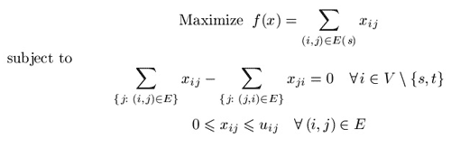
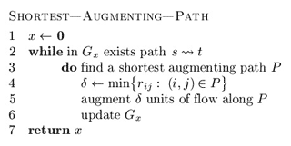
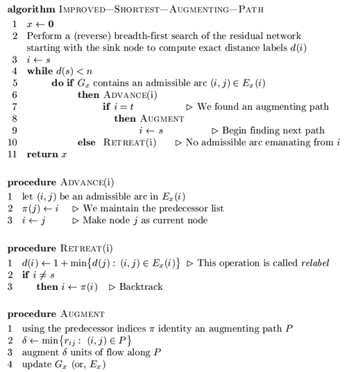
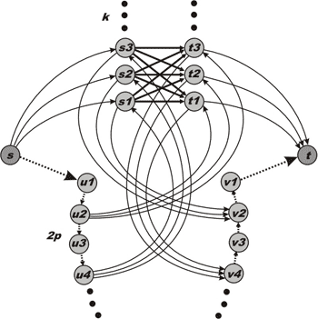
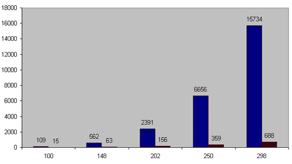
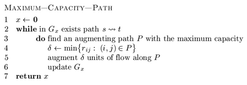
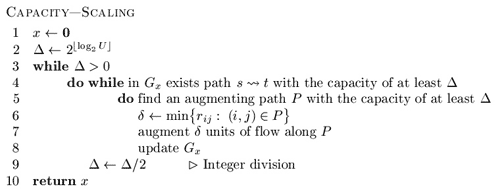
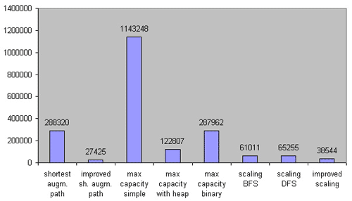
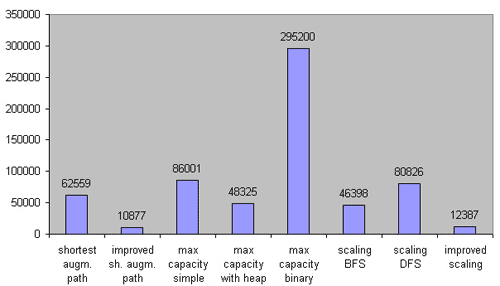
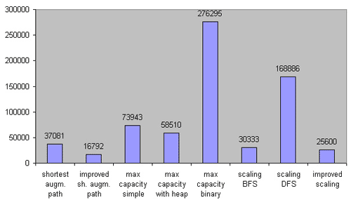

Member Search

|

With this article, we'll revisit the so-called "max-flow" problem, with the goal of making some practical analysis of the most famous augmenting path algorithms. We will discuss several algorithms with different complexity from O(nm2) to O(nmlogU) and reveal the most efficient one in practice. As we will see, theoretical complexity is not a good indicator of the actual value of an algorithm.
The article is targeted to the readers who are familiar with the basics of network flow theory. If not, I'll refer them to check out [1], [2] or algorithm tutorial [5].
In the first section we remind some necessary definitions and statements of the maximum flow theory. Other sections discuss the augmenting path algorithms themselves. The last section shows results of a practical analysis and highlights the best in practice algorithm. Also we give a simple implementation of one of the algorithms.
Statement of the Problem
Suppose we have a directed network G = (V, E) defined by a set V of nodes (or vertexes) and a set E of arcs (or edges). Each arc (i,j) in E has an associated nonnegative capacity uij. Also we distinguish two special nodes in G: a source node s and a sink node t. For each i in V we denote by E(i) all the arcs emanating from node i. Let U = max uij by (i,j) in E. Let us also denote the number of vertexes by n and the number of edges by m.
We wish to find the maximum flow from the source node s to the sink node t that satisfies the arc capacities and mass balance constraints at all nodes. Representing the flow on arc (i,j) in E by xij we can obtain the optimization model for the maximum flow problem:

Vector (xij) which satisfies all constraints is called a feasible solution or, a flow (it is not necessary maximal). Given a flow x we are able to construct the residual network with respect to this flow according to the following intuitive idea. Suppose that an edge (i,j) in E carries xij units of flow. We define the residual capacity of the edge (i,j) as rij = uij - xij. This means that we can send an additional rij units of flow from vertex i to vertex j. We can also cancel the existing flow xij on the arc if we send up xij units of flow from j to i over the arc (i,j).
So, given a feasible flow x we define the residual network with respect to the flow x as follows. Suppose we have a network G = (V, E). A feasible solution x engenders a new (residual) network, which we define by Gx = (V, Ex), where Ex is a set of residual edges corresponding to the feasible solution x.
What is Ex? We replace each arc (i,j) in E by two arcs (i,j), (j,i): the arc (i,j) has (residual) capacity rij = uij - xij, and the arc (j,i) has (residual) capacity rji=xij. Then we construct the set Ex from the new edges with a positive residual capacity.
Augmenting Path Algorithms as a whole
In this section we describe one method on which all augmenting path
algorithms are being based. This method was developed by Ford and
Fulkerson in 1956 [3]. We start with some important definitions.
Augmenting path is a directed path from a source node s to a sink node t in the residual network. The residual capacity of an augmenting path is the minimum residual capacity of any arc in the path. Obviously, we can send additional flow from the source to the sink along an augmenting path.
All augmenting path algorithms are being constructed on the following basic idea known as augmenting path theorem:
Theorem 1 (Augmenting Path Theorem). A flow x* is a maximum flow if and only if the residual network Gx* contains no augmenting path.
According to the theorem we obtain a method of finding a maximal flow. The method proceeds by identifying augmenting paths and augmenting flows on these paths until the network contains no such path. All algorithms that we wish to discuss differ only in the way of finding augmenting paths.
We consider the maximum flow problem subject to the following assumptions.
Assumption 1. The network is directed.
Assumption 2. All capacities are nonnegative integers.
This assumption is not necessary for some algorithms, but the algorithms whose complexity bounds involve U assume the integrality of the data.
Assumption 3. The problem has a bounded optimal solution.
This assumption in particular means that there are no uncapacitated paths from the source to the sink.
Assumption 4. The network does not contain parallel arcs.
This assumption imposes no loss of generality, because one can summarize capacities of all parallel arcs.
As to why these assumptions are correct we leave the proof to the reader.
It is easy to determine that the method described above works correctly. Under assumption 2, on each augmenting step we increase the flow value by at least one unit. We (usually) start with zero flow. The maximum flow value is bounded from above, according to assumption 3. This reasoning implies the finiteness of the method.
With those preparations behind us, we are ready to begin discussing the algorithms.
Shortest Augmenting Path Algorithm, O(n2m)
In 1972 Edmonds and Karp -- and, in 1970, Dinic -- independently proved
that if each augmenting path is shortest one, the algorithm will perform
O(nm) augmentation steps. The shortest path
(length of each edge is equal to one) can be found with the help of
breadth-first search (BFS) algorithm [2], [6]. Shortest Augmenting Path Algorithm is well known and widely discussed in many books and articles, including [5], which is why we will not describe it in great detail. Let's review the idea using a kind of pseudo-code:

In line 5, current flow x is being increased by some positive amount.
The algorithm was said to perform O(nm) steps of finding an augmenting path. Using BFS, which requires O(m) operation in the worst case, one can obtain O(nm2) complexity of the algorithm itself. If m ~ n2 then one must use BFS procedure O(n3) times in worst case. There are some networks on which this numbers of augmentation steps is being achieved. We will show one simple example below.
Improved Shortest Augmenting Path Algorithm, O(n2m)
As mentioned earlier, the natural approach for finding any shortest
augmenting path would be to look for paths by performing a breadth-first
search in the residual network. It requires O(m) operations in the worst case and imposes O(nm2) complexity of the maximum flow algorithm. Ahuja and Orlin improved the shortest augmenting path algorithm in 1987 [1]. They exploited the fact that the minimum distance from any node i to the sink node t is monotonically nondecreasing over all augmentations and reduced the average time per augmentation to O(n). The improved version of the augmenting path algorithm, then, runs in O(n2m) time. We can now start discussing it according to [1].
Definition 1. Distance function d: V_ Z+ with respect to the residual capacities rij is a function from the set of nodes to nonnegative integers. Let's say that distance function is valid if it is satisfies the following conditions:
- d(t)=0;
- d(i) ≤ d(j) + 1, for every (i,j) in E with rij>0.
Informally (and it is easy to prove), valid distance label of node i, represented by d(i), is a lower bound on the length of the shortest path from i to t in the residual network Gx. We call distance function exact if each i in V d(i) equals the length of the shortest path from i to t in the residual network. It is also easy to prove that if d(s) ≥ n then the residual network contains no path from the source to the sink.
An arc (i,j) in E is called admissible if d(i) = d(j) + 1. We call other arcs inadmissible. If a path from s to t consists of admissible arcs then the path is admissible. Evidently, an admissible path is the shortest path from the source to the sink. As far as every arc in an admissible path satisfies condition rij>0, the path is augmenting.
So, the improved shortest augmenting path algorithm consists of four steps (procedures): main cycle, advance, retreat and augment. The algorithm maintains a partial admissible path, i.e., a path from s to some node i, consisting of admissible arcs. It performs advance or retreat steps from the last node of the partial admissible path (such node is called current node). If there is some admissible arc (i,j) from current node i, then the algorithm performs the advance step and adds the arc to the partial admissible path. Otherwise, it performs the retreat step, which increases distance label of i and backtracks by one arc.
If the partial admissible path reaches the sink, we perform an augmentation. The algorithm stops when d(s) ≥ n. Let's describe these steps in pseudo-code [1]. We denoted residual (with respect to flow x) arcs emanating from node i by Ex(i). More formally, Ex(i) = { (i,j) in E(i): rij > 0 }.

In line 1 of retreat procedure if Ex(i) is empty, then suppose d(i) equals n.
Ahuja and Orlin suggest the following data structure for this algorithm [1]. We maintain the arc list E(i) which contains all the arcs emanating from node i. We arrange the arcs in this list in any fixed order. Each node i has a current arc, which is an arc in E(i) and is the next candidate for admissibility testing. Initially, the current arc of node i is the first arc in E(i). In line 5 the algorithm tests whether the node's current arc is admissible. If not, it designates the next arc in the list as the current arc. The algorithm repeats this process until either it finds an admissible arc or reaches the end of the arc list. In the latter case the algorithm declares that E(i) contains no admissible arc; it again designates the first arc in E(i) as the current arc of node i and performs the relabel operation by calling the retreat procedure (line 10).
Now we outline a proof that the algorithm runs in O(n2m) time.
Lemma 1. The algorithm maintains distance labels at each step. Moreover, each relabel (or, retreat) step strictly increases the distance label of a node.
Sketch to proof. Perform induction on the number of relabel operation and augmentations.
Lemma 2. Distance label of each node increases at most n times. Consecutively, relabel operation performs at most n2 times.
Proof. This lemma is consequence of lemma 1 and the fact that if d(s) ≥ n then the residual network contains no augmenting path.
Since the improved shortest augmenting path algorithm makes augmentations along the shortest paths (like unimproved one), the total number of augmentations is the same O(nm). Each retreat step relabels a node, that is why number of retreat steps is O(n2) (according to lemma 2). Time to perform retreat/relabel steps is O( n ∑i in V |E(i)| ) = O(nm). Since one augmentation requires O(n) time, total augmentation time is O(n2m). The total time of advance steps is bounded by the augmentation time plus the retreat/relabel time and it is again O(n2m). We obtain the following result:
Theorem 2. The improved shortest augmenting path algorithm runs in O(n2m) time.
Ahuja and Orlin [1] suggest one very useful practical improvement of the algorithm. Since the algorithm performs many useless relabel operations while the maximum flow has been found, it will be better to give an additional criteria of terminating. Let's introduce (n+1)-dimensional additional array, numbs, whose indices vary from 0 to n. The value numbs(k) is the number of nodes whose distance label equals k. The algorithm initializes this array while computing the initial distance labels using BFS. At this point, the positive entries in the array numbs are consecutive (i.e., numbs(0), numbs(1), ..., numbs(l) will be positive up to some index l and the remaining entries will all be zero).
When the algorithm increases a distance label of a node from x to y, it subtracts 1 from numbs(x), adds 1 to numbs(y) and checks whether numbs(x) = 0. If it does equal 0, the algorithm terminates.
This approach is some kind of heuristic, but it is really good in practice. As to why this approach works we leave the proof to the reader (hint: show that the nodes i with d(i) > x and nodes j with d(j) < x engender a cut and use maximum-flow-minimum-cut theorem).
Comparison of Improved and Unimproved versions
In this section we identify the worst case for both shortest augmenting
path algorithms with the purpose of comparing their running times.
In the worst case both improved and unimproved algorithms will perform O(n3) augmentations, if m ~ n2. Norman Zadeh [4] developed some examples on which this running time is based. Using his ideas we compose a somewhat simpler network on which the algorithms have to perform O(n3) augmentations and which is not dependent on a choice of next path.

Figure 1. Worst case example for the shortest augmenting path algorithm.
Figure 1. Worst case example for the shortest augmenting path algorithm.
All vertexes except s and t are divided into four subsets: S={s1,...,sk}, T={t1,...,tk}, U={u1,...,u2p} and V={v1,...,v2p}. Both sets S and T contain k nodes while both sets U and V contain 2p nodes. k and p are fixed integers. Each bold arc (connecting S and T) has unit capacity. Each dotted arc has an infinite capacity. Other arcs (which are solid and not straight) have capacity k.
First, the shortest augmenting path algorithm has to augment flow k2 time along paths (s, S, T, t) which have length equal to 3. The capacities of these paths are unit. After that the residual network will contain reversal arcs (T, S) and the algorithm will chose another k2 augmenting paths (s, u1, u2, T, S, v2, v1, t) of length 7. Then the algorithm will have to choose paths (s, u1, u2, u3, u4, S, T, v4, v3, v2, v1, t) of length 11 and so on...
Now let's calculate the parameters of our network. The number of vertexes is n = 2k + 4p + 2. The number of edges is m = k2 + 2pk + 2k + 4p. As it easy to see, the number of augmentations is a = k2 (p+1).
Consider that p = k - 1. In this case n = 6k - 2 and a = k3. So, one can verify that a ~ n3 / 216. In [4] Zadeh presents examples of networks that require n3 / 27 and n3 / 12 augmentations, but these examples are dependent on a choice of the shortest path.
We made 5 worst-case tests with 100, 148, 202, 250 and 298 vertexes and compared the running times of the improved version of the algorithm against the unimproved one. As you can see on figure 2, the improved algorithm is much faster. On the network with 298 nodes it works 23 times faster. Practice analysis shows us that, in general, the improved algorithm works n / 14 times faster.

Figure 2. X-axis is the number of nodes. Y-axis is working time in milliseconds.
Blue colour indicates the shortest augmenting path algorithm and red does it improved version.
Figure 2. X-axis is the number of nodes. Y-axis is working time in milliseconds.
Blue colour indicates the shortest augmenting path algorithm and red does it improved version.
However, our comparison in not definitive, because we used only one kind of networks. We just wanted to justify that the O(n2m) algorithm works O(n) times faster than the O(nm2) on a dense network. A more revealing comparison is waiting for us at the end of the article.
Maximum Capacity Path Algorithm, O(n2mlognU) / O(m2 lognU logn) / O(m2 lognU logU)
In 1972 Edmonds and Karp developed another way to find an augmenting
path. At each step they tried to increase the flow with the maximum
possible amount. Another name of this algorithm is "gradient
modification of the Ford-Fulkerson method." Instead of using BFS to
identify a shortest path, this modification uses Dijkstra's algorithm to
establish a path with the maximal possible capacity. After
augmentation, the algorithm finds another such path in the residual
network, augments flow along it, and repeats these steps until the flow
is maximal.

There's no doubt that the algorithm is correct in case of integral capacity. However, there are tests with non-integral arc's capacities on which the algorithm may fail to terminate.
Let's get the algorithm's running time bound by starting with one lemma. To understand the proof one should remember that the value of any flow is less than or equal to the capacity of any cut in a network, or read this proof in [1], [2]. Let's denote capacity of a cut (S,T) by c(S,T).
Lemma 3. Let F be the maximum flow's value, then G contains augmenting path with capacity not less than F/m.
Proof. Suppose G contains no such path. Let's construct a set E'={ (i,j) in E: uij ≥ F/m }. Consider network G' = (V, E') which has no path from s to t. Let S be a set of nodes obtainable from s in G and T = V \ S. Evidently, (S, T) is a cut and c(S, T) ≥ F. But cut (S, T) intersects only those edges (i,j) in E which have uij < F/m. So, it is clear that
c(S,T) < (F/m) _ m = F,
and we got a contradiction with the fact that c(S,T) ≥ F.
Theorem 3. The maximum capacity path algorithm performs O(m log (nU)) augmentations.
Sketch to proof. Suppose that the algorithm terminates after k augmentations. Let's denote by f1 the capacity of the first found augmentation path, by f2 the capacity of the second one, and so on. fk will be the capacity of the latter k-th augmenting path.
Consider, Fi = f1 + f2 +...+ fi. Let F* be the maximum flow's value. Under lemma 3 one can justify that
fi ≥ (F*-Fi-1) / m.
Now we can estimate the difference between the value of the maximal flow and the flow after i consecutive augmentations:
F* - Fi = F* - Fi-1 - fi ≤ F* - Fi-1 - (F* - Fi-1) / m = (1 - 1 / m) (F* - Fi-1) ≤ ... ≤ (1 - 1 / m)i _ F*
We have to find such an integer i, which gives (1 - 1 / m)i _ F* < 1. One can check that
i log m / (m+1) F* = O(m _ log F*) = O(m _ log(nU))
And the latter inequality proves the theorem.
To find a path with the maximal capacity we use Dijkstra's algorithm, which incurs additional expense at every iteration. Since a simple realization of Dijkstras's algorithm [2] incurs O(n2) complexity, the total running time of the maximum capacity path algorithm is O(n2mlog(nU)).
Using a heap implementation of Dijkstra's algorithm for sparse network [7] with running time O(mlogn), one can obtain an O(m2 logn log(nU)) algorithm for finding the maximum flow. It seems to be better that the improved Edmonds-Karp algorithm. However, this estimate is very deceptive.
There is another variant to find the maximum capacity path. One can use binary search to establish such a path. Let's start by finding the maximum capacity path on piece [0,U]. If there is some path with capacity U/2, then we continue finding the path on piece [U/2, U]; otherwise, we try to find the path on [0,U/2-1]. This approach incurs additional O(mlogU) expense and gives O(m2log(nU)logU) time bound to the maximum flow algorithm. However, it works really poorly in practice.
Capacity Scaling Algorithm, O(m2logU)
In 1985 Gabow described the so-called "bit-scaling" algorithm. The
similar capacity scaling algorithm described in this section is due to
Ahuja and Orlin [1].
Informally, the main idea of the algorithm is to augment the flow along paths with sufficient large capacities, instead of augmenting along maximal capacities. More formally, let's introduce a parameter Delta. First, Delta is quite a large number that, for instance, equals U. The algorithm tries to find an augmenting path with capacity not less that Delta, then augments flow along this path and repeats this procedure while any such Delta-path exists in the residual network.
The algorithm either establishes a maximum flow or reduces Delta by a factor of 2 and continues finding paths and augmenting flow with the new Delta. The phase of the algorithm that augments flow along paths with capacities at least Delta is called Delta-scaling phase or, Delta-phase. Delta is an integral value and, evidently, algorithm performs O(logU) Delta-phases. When Delta is equal to 1 there is no difference between the capacity scaling algorithm and the Edmonds-Karp algorithm, which is why the algorithm works correctly.

We can obtain a path with the capacity of at least Delta fairly easily - in O(m) time (by using BFS). At the first phase we can set Delta to equal either U or the largest power of 2 that doesn't exceed U.
The proof of the following lemma is left to the reader.
Lemma 4. At every Delta-phase the algorithm performs O(m) augmentations in worst case.
Sketch to proof. Use the induction by Delta to justify that the minimum cut at each Delta-scaling phase less that 2m Delta.
Applying lemma 4 yields the following result:
Theorem 4. Running time of the capacity scaling algorithm is O(m2logU).
Keep in mind that there is no difference between using breadth-first search and depth-first search when finding an augmenting path. However, in practice, there is a big difference, and we will see it.
Improved Capacity Scaling Algorithm, O(nmlogU)
In the previous section we described an O(m2logU) algorithm for finding the maximum flow. We are going to improve the running time of this algorithm to O(nmlogU) [1].
Now let's look at each Delta-phase independently. Recall from the preceding section that a Delta-scaling phase contains O(m) augmentations. Now we use the similar technique at each Delta-phase that we used when describing the improved variant of the shortest augmenting path algorithm. At every phase we have to find the "maximum" flow by using only paths with capacities equal to at least Delta. The complexity analysis of the improved shortest augmenting path algorithm implies that if the algorithm is guaranteed to perform O(m) augmentations, it would run in O(nm) time because the time for augmentations reduces from O(n2m) to O(nm) and all other operations, as before, require O(nm) time. These reasoning instantly yield a bound of O(nmlogU) on the running time of the improved capacity scaling algorithm.
Unfortunately, this improvement hardly decreases the running time of the algorithm in practice.
Practical Analysis and Comparison
Now let's have some fun. In this section we compare all described
algorithms from practical point of view. With this purpose I have made
some test cases with the help of [8] and divided them into three groups by density. The first group of tests is made of networks with m ≤ n1.4 - some kind of sparse networks. The second one consists of middle density tests with n1.6 ≤ m ≤ n1.7. And the last group represents some kinds of almost full graphs (including full acyclic networks) with m ≥ n1.85.
I have simple implementations of all algorithms described before. I realized these algorithms without any kind of tricks and with no preference towards any of them. All implementations use adjacency list for representing a network.
Let's start with the first group of tests. These are 564 sparse networks with number of vertexes limited by 2000 (otherwise, all algorithms work too fast). All working times are given in milliseconds.

Figure 3. Comparison on sparse networks. 564 test cases. m ≤ n1.4.
Figure 3. Comparison on sparse networks. 564 test cases. m ≤ n1.4.
As you can see, it was a big mistake to try Dijkstra's without heap implementation of the maximum capacity path algorithm on sparse networks (and it's not surprising); however, its heap implementation works rather faster than expected. Both the capacity scaling algorithms (with using DFS and BFS) work in approximately the same time, while the improved implementation is almost 2 times faster. Surprisingly, the improved shortest path algorithm turned out to be the fastest on sparse networks.
Now let's look at the second group of test cases. It is made of 184 tests with middle density. All networks are limited to 400 nodes.

Figure 4. Comparison on middle density networks. 184 test cases. n1.6 ≤ m ≤ n1.7.
Figure 4. Comparison on middle density networks. 184 test cases. n1.6 ≤ m ≤ n1.7.
On the middle density networks the binary search implementation of the maximum capacity path algorithm leaves much to be desired, but the heap implementation still works faster than the simple (without heap) one. The BFS realization of the capacity scaling algorithm is faster than the DFS one. The improved scaling algorithm and the improved shortest augmenting path algorithm are both very good in this case.
It is very interesting to see how these algorithms run on dense networks. Let's take a look -- the third group is made up of 200 dense networks limited by 400 vertexes.

Figure 5. Comparison on dense networks. 200 test cases. m ≥ n1.85.
Figure 5. Comparison on dense networks. 200 test cases. m ≥ n1.85.
Now we see the difference between the BFS and DFS versions of the capacity scaling algorithm. It is interesting that the improved realization works in approximately the same time as the unimproved one. Unexpectedly, the Dijkstra's with heap implementation of the maximum capacity path algorithm turned out to be faster than one without heap.
Without any doubt, the improved implementation of Edmonds-Karp algorithm wins the game. Second place is taken by the improved scaling capacity algorithm. And the scaling capacity with BFS got bronze.
As to maximum capacity path, it is better to use one variant with heap; on sparse networks it gives very good results. Other algorithms are really only good for theoretical interest.
As you can see, the O(nmlogU) algorithm isn't so fast. It is even slower than the O(n2m) algorithm. The O(nm2) algorithm (it is the most popular) has worse time bounds, but it works much faster than most of the other algorithms with better time bounds.
My recommendation: Always use the scaling capacity path algorithm with BFS, because it is very easy to implement. The improved shortest augmenting path algorithm is rather easy, too, but you need to be very careful to write the program correctly. During the challenge it is very easy to miss a bug.
I would like to finish the article with the full implementation of the improved shortest augmenting path algorithm. To maintain a network I use the adjacency matrix with purpose to providing best understanding of the algorithm. It is not the same realization what was used during our practical analysis. With the "help" of the matrix it works a little slower than one that uses adjacency list. However, it works faster on dense networks, and it is up to the reader which data structure is best for them.
#include <stdio.h>
#define N 2007 // Number of nodes
#define oo 1000000000 // Infinity
// Nodes, Arcs, the source node and the sink node
int n, m, source, sink;
// Matrixes for maintaining
// Graph and Flow
int G[N][N], F[N][N];
int pi[N]; // predecessor list
int CurrentNode[N]; // Current edge for each node
int queue[N]; // Queue for reverse BFS
int d[N]; // Distance function
int numbs[N]; // numbs[k] is the number of nodes i with d[i]==k
// Reverse breadth-first search
// to establish distance function d
int rev_BFS() {
int i, j, head(0), tail(0);
// Initially, all d[i]=n
for(i = 1; i <= n; i++)
numbs[ d[i] = n ] ++;
// Start from the sink
numbs[n]--;
d[sink] = 0;
numbs[0]++;
queue[ ++tail ] = sink;
// While queue is not empty
while( head != tail ) {
i = queue[++head]; // Get the next node
// Check all adjacent nodes
for(j = 1; j <= n; j++) {
// If it was reached before or there is no edge
// then continue
if(d[j] < n || G[j][i] == 0) continue;
// j is reached first time
// put it into queue
queue[ ++tail ] = j;
// Update distance function
numbs[n]--;
d[j] = d[i] + 1;
numbs[d[j]]++;
}
}
return 0;
}
// Augmenting the flow using predecessor list pi[]
int Augment() {
int i, j, tmp, width(oo);
// Find the capacity of the path
for(i = sink, j = pi[i]; i != source; i = j, j = pi[j]) {
tmp = G[j][i];
if(tmp < width) width = tmp;
}
// Augmentation itself
for(i = sink, j = pi[i]; i != source; i = j, j = pi[j]) {
G[j][i] -= width; F[j][i] += width;
G[i][j] += width; F[i][j] -= width;
}
return width;
}
// Relabel and backtrack
int Retreat(int &i) {
int tmp;
int j, mind(n-1);
// Check all adjacent edges
// to find nearest
for(j=1; j <= n; j++)
// If there is an arc
// and j is "nearer"
if(G[i][j] > 0 && d[j] < mind)
mind = d[j];
tmp = d[i]; // Save previous distance
// Relabel procedure itself
numbs[d[i]]--;
d[i] = 1 + mind;
numbs[d[i]]++;
// Backtrack, if possible (i is not a local variable! )
if( i != source ) i = pi[i];
// If numbs[ tmp ] is zero, algorithm will stop
return numbs[ tmp ];
}
// Main procedure
int find_max_flow() {
int flow(0), i, j;
rev_BFS(); // Establish exact distance function
// For each node current arc is the first arc
for(i=1; i<=n; i++) CurrentNode[i] = 1;
// Begin searching from the source
i = source;
// The main cycle (while the source is not "far" from the sink)
for( ; d[source] < n ; ) {
// Start searching an admissible arc from the current arc
for(j = CurrentNode[i]; j <= n; j++)
// If the arc exists in the residual network
// and if it is an admissible
if( G[i][j] > 0 && d[i] == d[j] + 1 )
// Then finish searhing
break;
// If the admissible arc is found
if( j <= n ) {
CurrentNode[i] = j; // Mark the arc as "current"
pi[j] = i; // j is reachable from i
i = j; // Go forward
// If we found an augmenting path
if( i == sink ) {
flow += Augment(); // Augment the flow
i = source; // Begin from the source again
}
}
// If no an admissible arc found
else {
CurrentNode[i] = 1; // Current arc is the first arc again
// If numbs[ d[i] ] == 0 then the flow is the maximal
if( Retreat(i) == 0 )
break;
}
} // End of the main cycle
// We return flow value
return flow;
}
// The main function
// Graph is represented in input as triples <from, to, capacity>
// No comments here
int main() {
int i, p, q, r;
scanf("%d %d %d %d", &n, &m, &source, &sink);
for(i = 0; i < m; i++) {
scanf("%d %d %d", &p, &q, &r);
G[p][q] += r;
}
printf("%d", find_max_flow());
return 0;
}
References
[1] Ravindra K. Ahuja, Thomas L. Magnanti, and James B. Orlin. Network Flows: Theory, Algorithms, and Applications.
[2] Thomas H. Cormen, Charles E. Leiserson, Ronald L. Rivest. Introduction to Algorithms.
[3] Ford, L. R., and D. R. Fulkerson. Maximal flow through a network.
[4] Norman Zadeh. Theoretical Efficiency of the Edmonds-Karp Algorithm for Computing Maximal Flows.
[5] _efer_. Algorithm Tutorial: MaximumFlow.
[6] gladius. Algorithm Tutorial: Introduction to graphs and their data structures: Section 1.
[7] gladius. Algorithm Tutorial: Introduction to graphs and their data structures: Section 3.
[8] http://elib.zib.de/pub/mp-testdata/generators/index.html -- A number of generators for network flow problems.